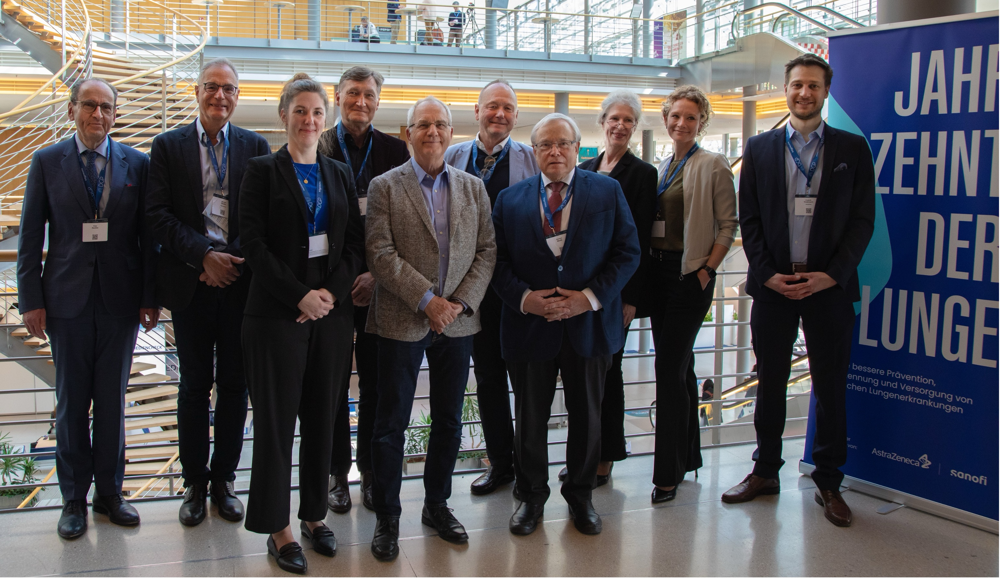
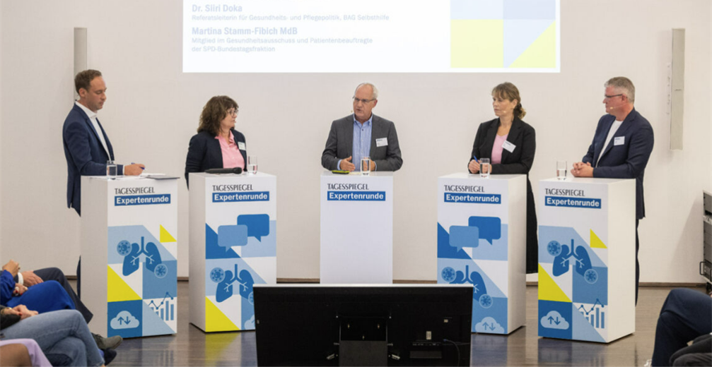
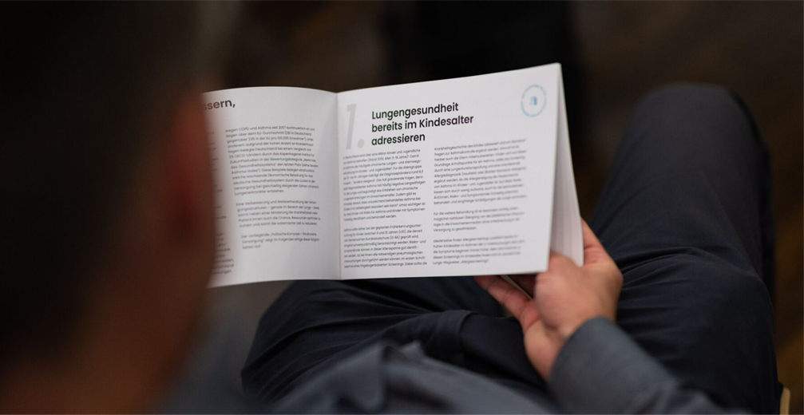
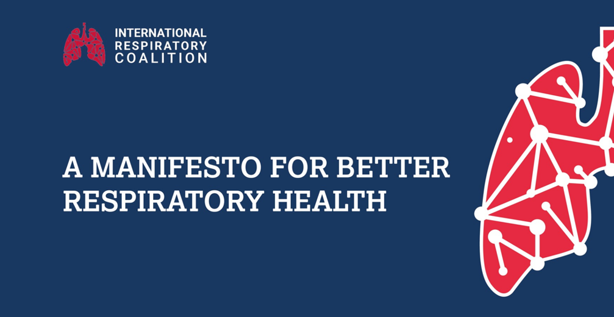
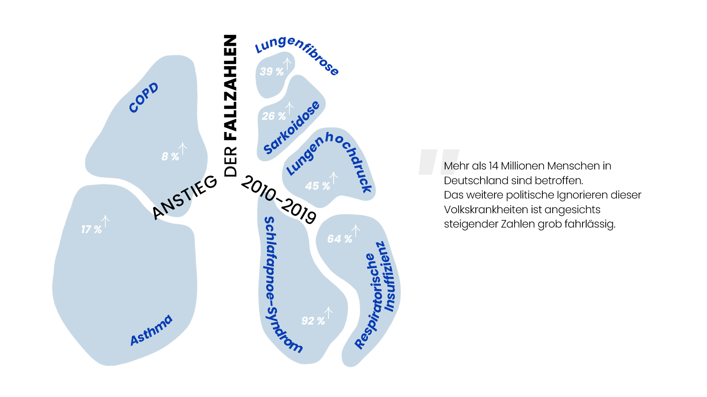

Initiative geht nächsten Schritt: „Jahrzehnt der Lunge" wird Verein
Aus der Initiative, die sich im Herbst 2021 formierte, geht nun der Verein „Jahrzehnt der Lunge e.V." hervor. Das gemeinsame Ziel ist es, den über 14 Millionen Menschen in Deutschland mit chronischen Lungen- und Atemwegserkrankungen mehr politische Präsenz zu verleihen.
Mehr erfahren →5 Fragen an Prof. Dr. Christian Vogelberg
Facharzt für Kinder- und Jugendmedizin, Kinderpneumologie, Allergologie, Leiter Bereich Kinderpneumologie/Allergologie, Leiter Universitäts AllergieCentrum (UAC) Dresden.
Mehr erfahren →
Parlamentarischer Abend: „Bundestagswahl 2025 – Eine Chance für die vergessenen Volkskrankheiten der Lunge"
Am 3. Dezember 2024 trafen sich in Berlin politische Entscheidungsträger, Expert:innen und Patient:innenvertreter:innen beim Parlamentarischen Abend des Jahrzehnts der Lunge.
Mehr erfahren →COPD-Index: Ein Weckruf zum Welt-COPD-Tag
Der COPD-Index untersucht die Situation in 34 Ländern. Das Ergebnis für Deutschland ist alarmierend: Mit Platz 28 liegt Deutschland weit zurück.
Mehr erfahren →Chronische Lungen- und Atemwegserkrankungen: Ein unterschätztes Problem
Die Zahl der Betroffenen von chronischen Lungen- und Atemwegserkrankungen sind zuletzt drastisch gestiegen. Mittlerweile sind in Deutschland über 14 Millionen Menschen betroffen.
Mehr erfahren →
5 Fragen an Dr. med. Peter Kardos
Facharzt für Innere Medizin, Allergologie und Schlafmedizin am Lungenzentrum Maingau, Mitglied des geschäftsführenden Vorstandes der Deutschen Atemwegsliga e.V.
Mehr erfahren →5 Fragen an Prof. Dr. Monika Gappa
Chefärztin der Klinik für Kinder- und Jugendmedizin am Evangelischen Krankenhaus Düsseldorf, Präsidentin der European Respiratory Society.
Mehr erfahren →Bundesregierung plant neues Luftreinhalteprogramm
Das Jahrzehnt der Lunge begrüßt den geplanten Entwurf der Bundesregierung für ein Nationales Luftreinhalteprogramm – fordert aber strengere WHO-konforme Grenzwerte.
Mehr erfahren →
Tagesspiegel Expertenrunde „Chronisch Krank"
Schwerpunkt Lunge – Wie steht es um die Versorgung in Deutschland? Unter diesem Titel fand am 11. Oktober 2023 ein impulsgebendes Fachgespräch des Tagesspiegels statt.
Mehr erfahren →
Expert:innenkreis stellt zweiten Kompass zur „Strukturierten Versorgung" vor
Das Jahrzehnt der Lunge hat seinen zweiten Politischen Kompass veröffentlicht. Diese Ausgabe widmet sich der strukturierten Versorgung von Lungen- und Atemwegserkrankungen.
Mehr erfahren →5 Fragen an Elke Alsdorf
Patientenvertreterin beim Deutschen Allergie- und Asthmabund e.V. (DAAB) und Expertin des Jahrzehnts der Lunge über Schulungen, Aufklärung und die Bedürfnisse von Patient:innen.
Mehr erfahren →
Neues Manifest der International Respiratory Coalition (IRC)
Die IRC hat anlässlich ihres zweiten Gipfeltreffens ein neues Manifest veröffentlicht. Darin fordert sie eine politische Priorisierung von Atemwegserkrankungen und ruft Regierungen zur Entwicklung von Präventionsstrategien auf.
Mehr erfahren →Positionspapier der DGP zur Tabakentwöhnung
In Zusammenarbeit mit zahlreichen Fachgesellschaften hat die DGP ein Positionspapier zur Tabakentwöhnung bei hospitalisierten Patient:innen veröffentlicht.
Mehr erfahren →Offener Brief an Gesundheitsminister Karl Lauterbach
Das Jahrzehnt der Lunge appelliert gemeinsam mit der DGP und der Deutschen Lungenstiftung: Chronische Atemwegserkrankungen müssen im Nationalen Präventionsplan berücksichtigt werden.
Mehr erfahren →Der Severe-Asthma-Index
Neue Erkenntnisse zur Versorgung von Asthmapatient:innen im internationalen Vergleich. Deutschland belegt Platz 21 von 29 OECD-Ländern.
Mehr erfahren →
Pneumologische Erkrankungen – Anzahl Betroffener steigt massiv: Weißbuch Lunge liefert neueste Zahlen
Im Jahr 2019 waren rund 14 Millionen Menschen von Lungen- und Atemwegserkrankungen betroffen. COPD und Asthma stiegen in zehn Jahren um 17 % bzw. 8 % an.
Mehr erfahren →